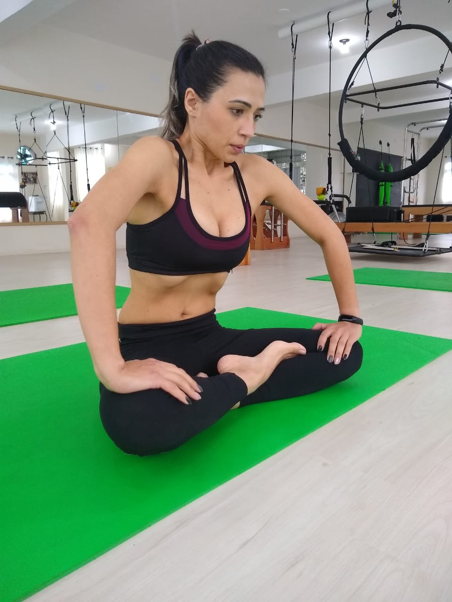
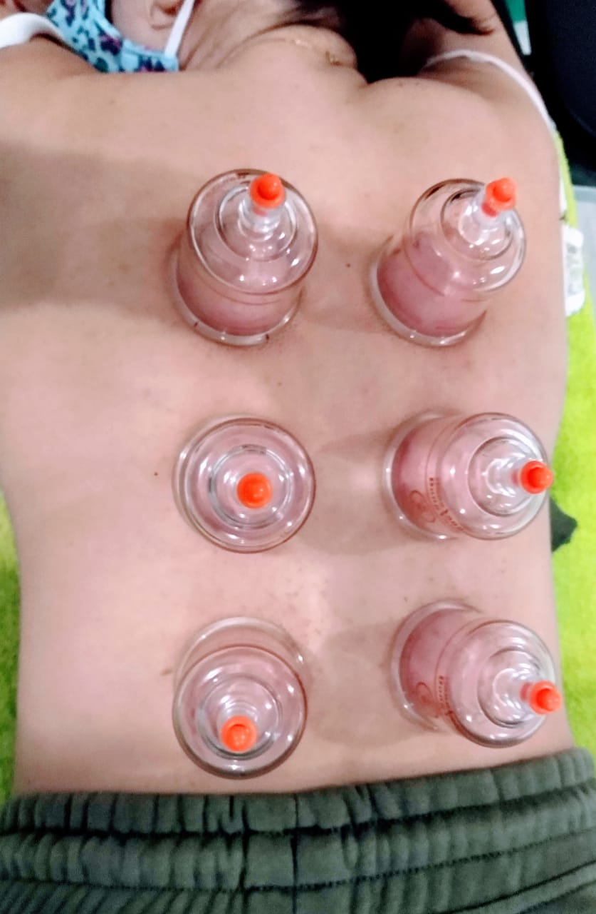
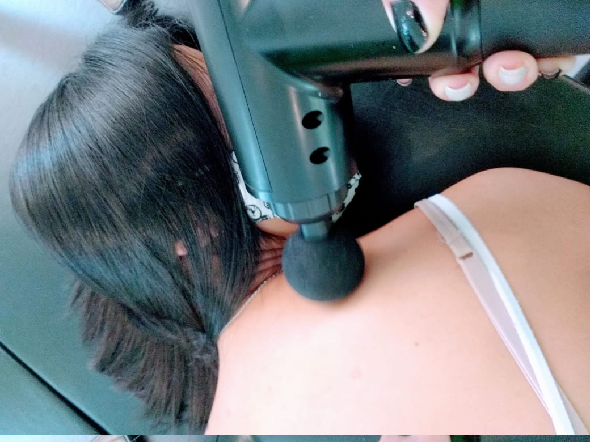
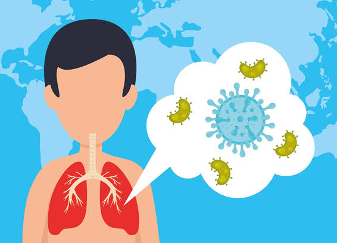
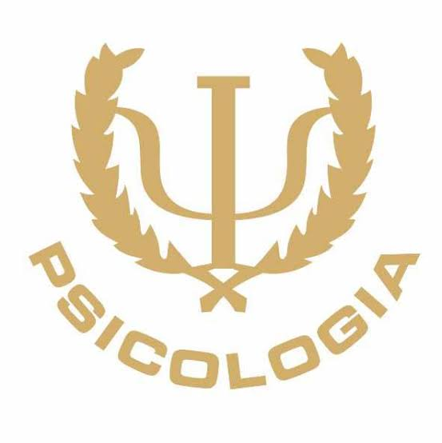
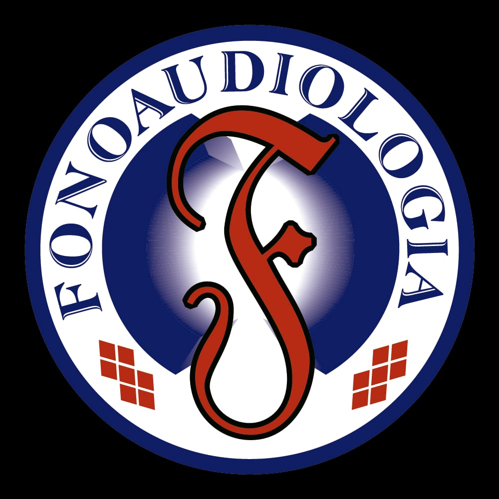
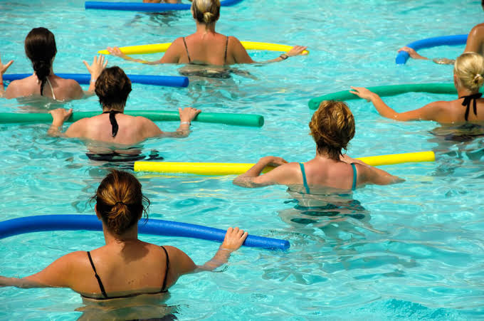
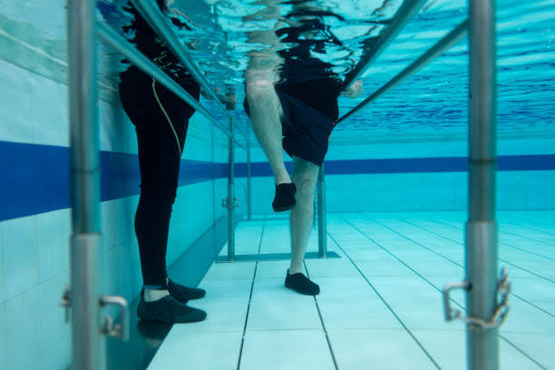
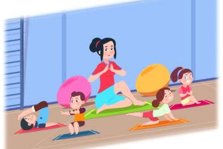
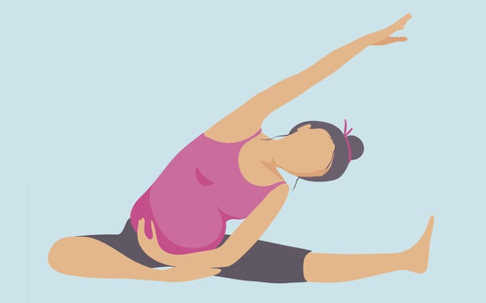

-
Fisioterapia

Fisioterapia Ortopédica e Neurológica é indicada para crianças, adultos e idosos com atendimentos individuais para uma melhor reabilitação.
-
RPG

Reeducação Postural Global tem por finalidade tratar desvios posturais e suas dores realinhando o corpo. Indicado para escoliose e desvios posturais.
-
Pilates

Atividade física que trabalha a mente, respiração, postura, coordenação motora, alongamento, fortalecimento, equilíbrio e relaxamento.
-
Dry Needling

Tratamento com agulhas em pontos de tensão muscular, proporcionando em poucos minutos alívio da dor muscular.
-
Acupuntura Auricular

Ativando pontos na orelha para vários tratamentos: dores em geral, emagrecer, ansiedade, depressão, tabagismo.
-
Kinesio Tape

Aplicação de faixas na pele: para relaxar determinados músculos ou auxiliar no ganho de força e movimento.
-
Hipopressivo
Mais que a famosa barriga negativa. Busca uma melhora postural, fechamento de diástase, melhora vascularização, funções sexuais e cólicas, abdominoplastia, diminuição do diâmetro de cintura, da incontinência urinária por esforços...
-
Ventosaterapia
É uma técnica que através da sucção que fazemos na pele, ajudamos na eliminação de contraturas musculares e pontos gatilho melhorando a circulação sanguínea local; assim conseguimos relaxar e acalmar o corpo e a mente.
-
Liberação Miofascial
É uma técnica manual e/ou instrumental, na qual conseguimos eliminar tensão e contratura muscular, atuando como prevenção de lesões e alívio de dores musculares. Assim proporcionando relaxamento e bem estar; já de imediato.
-
Fisioterapia Pós-Covid
Vários pacientes, após ter o Covid ficam sequelas que impactam sua saúde. Bem como alterações cardiorrespiratórias e neurológicas, fraqueza muscular, perda de mobilidade e fadiga. A fisioterapia ajuda na reabilitação cardiopulmonar e motora, por meio de exercícios e manobras pulmonar.
-
Psicologia
Exploram conceitos como percepção, cognição, atenção, emoção, inteligência, fenomenologia, motivação, funcionamento do cérebro humano, personalidade, comportamento, relacionamentos interpessoais, incluindo resiliência, entre outras áreas.
-
Nutrição
Atendimento de adultos, idosos, gestantes e esportistas. Trabalhando a performance, suplementação, plano alimentar, bioimpedancia, reeducação, emagrecimento, ganho de massa muscular e nutrição esportiva.Melhorando sua qualidade de vida nutricional.
-
Fonoaudiologia
Especialista em motricidade oral, linguagem, fala, alimentação, mastigação. Também com experiência em síndromes e sequelas de AVC. Trabalhando com crianças, adultos e idosos. Buscando proporcionar o melhor para cada paciente conforme a necessidade.
-
Hidroginastica
A pratica de hidroginástica tem como principal objetivo o condicionamento cardiovascular e muscular, por meio do treinamento em flexibilidade, coordenação motora e relaxamento. Por meio de exercícios físicos com baixo impacto nas articulações, muito indicado para osteoartrose.
-
Hidroterapia
Também conhecida como fisioterapia aquática ou aquaterapia, é uma atividade terapêutica que consiste na realização de exercícios dentro de uma piscina com água aquecida para acelerar a recuperação de lesões de atletas, pacientes com artrite ou outras necessidades.
-
Pilates Kids
O Pilates é uma atividade para todas as idades. Os benefícios para crianças são vários. Entre eles estão: coordenação motora, consciência corporal, postura, equilíbrio, força, respiração, redução de ansiedade e ganho de resistência.
-
Pilates Gestante
O Pilates vai ajudar a gestante no ganho de flexibilidade, alongamento, força muscular, minimizando dores lombares e quadril, causadas pelo ganho de peso na gestação e mudança da estrutura corporal. Além de ajudar no parto e pós parto.